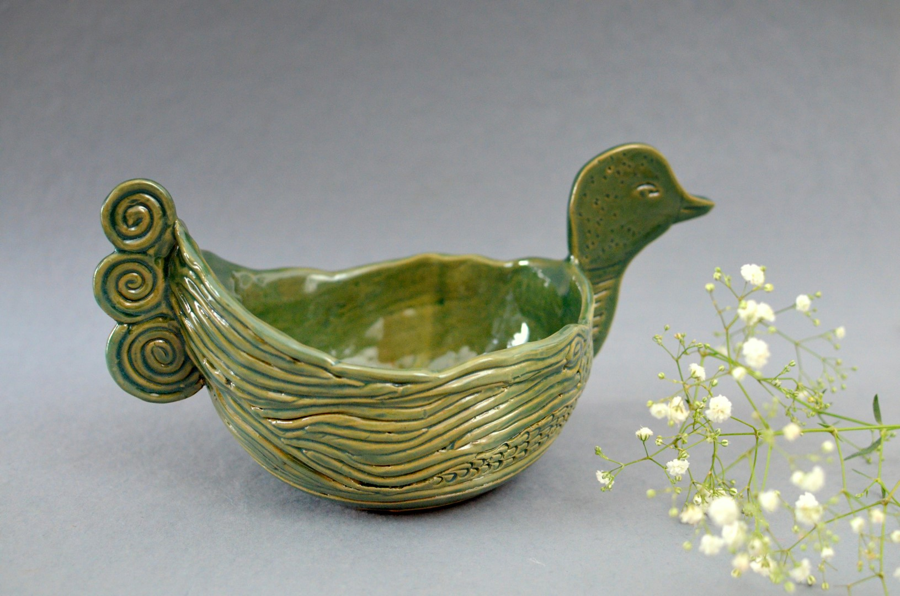
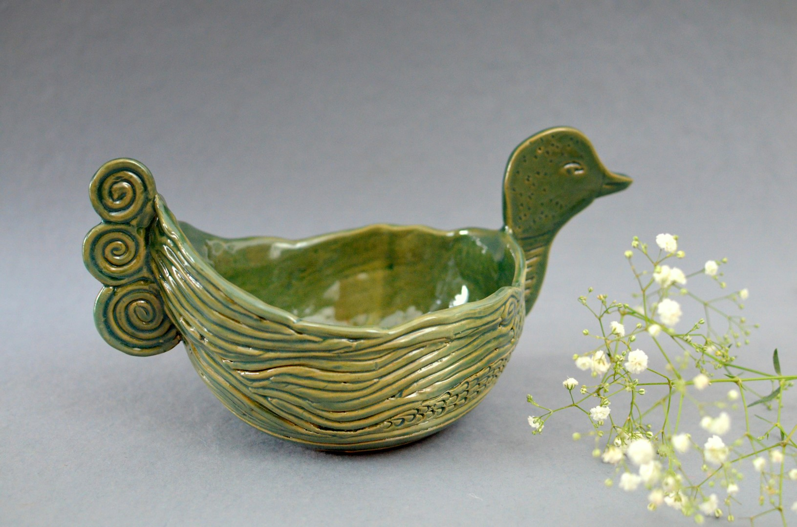

Before potters had the wheel, they used to create forms using clay, hands and fingers and basic hand tools. Inspired by the flowing and active water-life, I have created the duck and fish pieces to be happily swimming and casually floating in the secured environs of a home. These pieces can go alone or with a partner but they seem to be busy with themselves and are enjoying what they are doing. In this series, no two pieces are identical. The ducks are formed by coiling which is visible on its body. The fish is made using the slab technique. These forms depict the dynamic, ever-moving aquatic life. They are suitable as artefacts as well as occasional platters or bowls.
 
